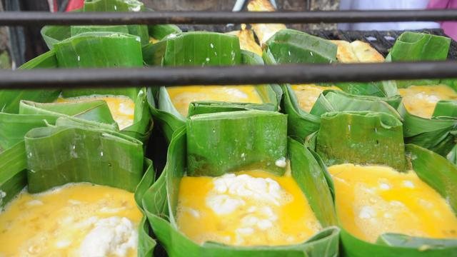

Festival Kuliner Lokal 17.8, Dukung Bisnis Makanan Dalam Negeri di Momen HUT ke-77 RI
Menggemakan dukungan untuk pengusaha makanan dalam negeri, ShopeeFood menyelenggarakan Festival Kuliner Lokal 17.8, merujuk spirit HUT ke-77 RI, "Pulih Lebih Cepat, Bangkit Lebih Kuat." Kampanye ini masih akan berlangsung hingga Rabu, 17 Agustus 2022.
Seperti inisiasi-inisiasi sebelumnya, mereka telah menyiapkan berbagai promosi untuk dinikmati. Brand Marketing Manager ShopeeFood, Andreas Christiadi, mengatakan dalam keterangan pers yang diterima Liputan6.com, baru-baru ini, "Kami ingin terus mendukung kemajuan pengusaha kuliner lokal."
"Di momen kemerdekaan tahun ini," imbuhnya. "Kami ingin berperan aktif menggerakkan masyarakat Indonesia untuk bersama-sama membantu mendorong peningkatan transaksi usaha kuliner lokal."
Ia melanjutkan, "Hadirnya beragam promo spesial di Festival Kuliner Lokal 17.8 diharapkan juga dapat membantu memfasilitasi kebutuhan para pengguna untuk menikmati pengalaman jelajah kuliner yang menyenangkan, sembari melestarikan cita rasa khas kuliner Nusantara dalam momen merayakan Hari Kemerdekaan (RI)."
Promosi yang ditawarkan antara lain Promo Jumbo sampai 100RB, Gratis Ongkir Sepuasnya, dan Diskon Terus sampai 60 persen. Lebih dari itu, para pengguna juga dapat menemukan berbagai menu pilihan lokal dengan harga terjangkau di bagian kategori "Pilihan Lokal di bawah 17RB" di ShopeeFood.
Pihaknya pun memberi beberapa rekomendasi kuliner lokal yang bisa dicoba. Pilihan menunya disebut siap membawa Anda berwisata kuliner keliling Indonesia dari nyamannya rumah.
Rekomendasi pertamanya adalah olahan ikan asal Palembang: pempek. Pempek, yang awalnya dikenal dengan nama kelesan, memang sudah jadi salah satu kuliner lokal favorit masyarakat.